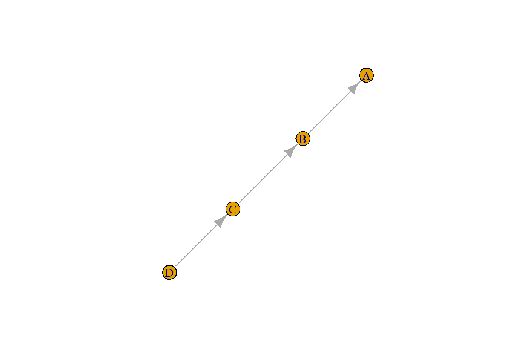
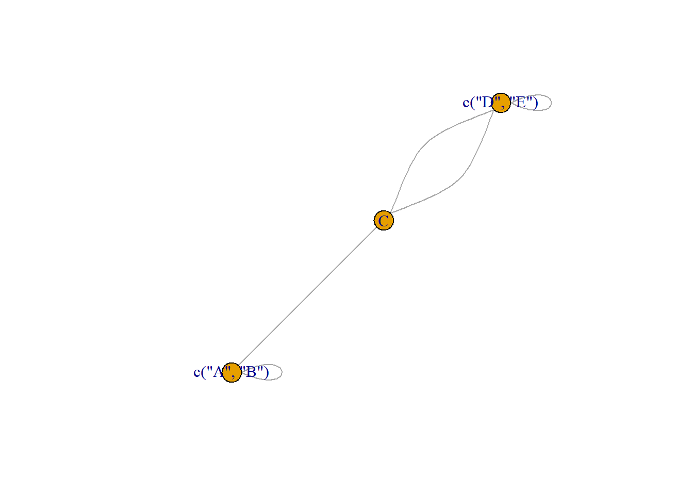
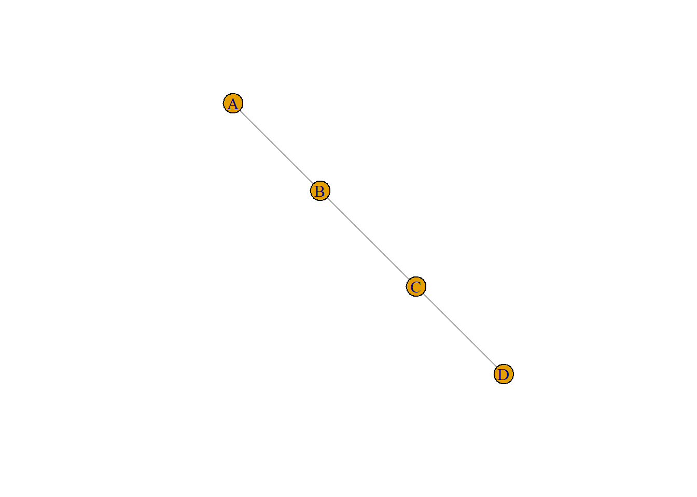
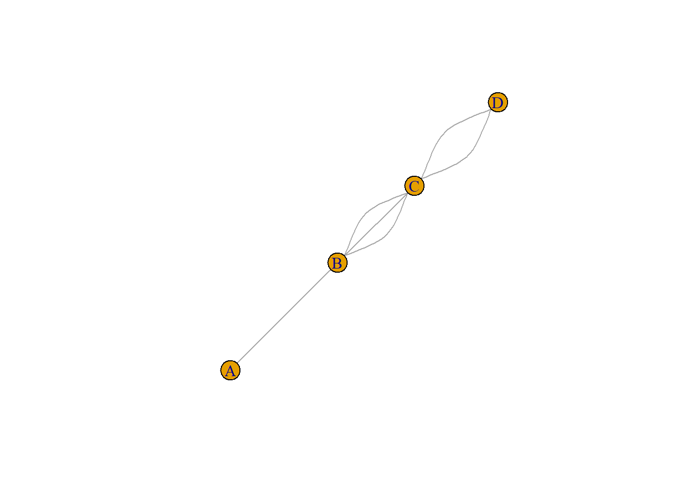
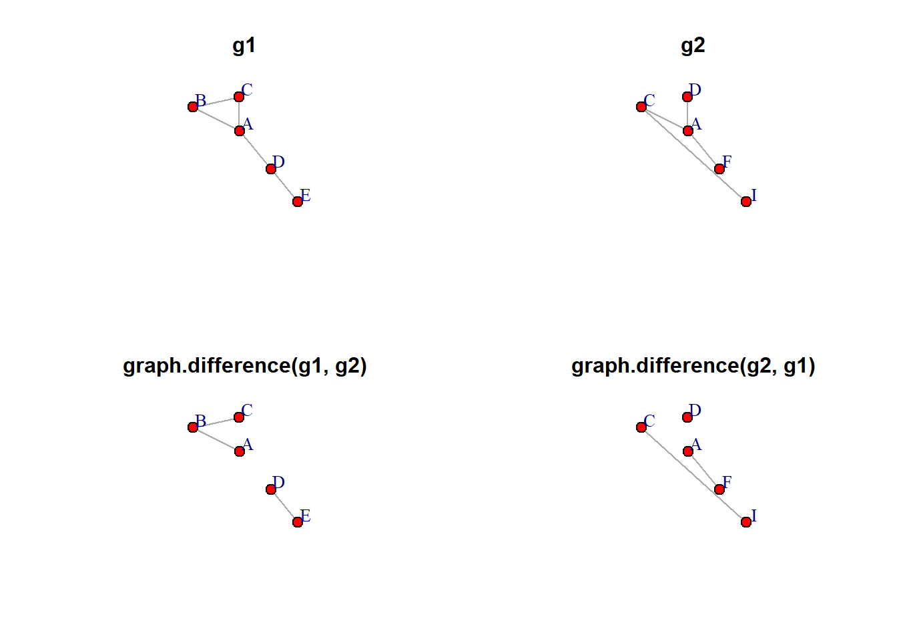

Actualisation d’un billet de juin 2015 posté sur (https://groupefmr.hypotheses.org)
Ce tutoriel décrit les fonctions d’igraph permettant de manipuler un réseau (simple ou non) et de combiner deux réseaux ayant a minima un sommet commun.
Manipuler un réseau simple
Rappel : en théorie des graphes, un réseau simple est un réseau sans boucle ni liens multiples.
Soit un réseau simple orienté. La fonction reverse_edges() inverse l’orientation des liens. Tous les attributs sont conservés. J’avoue ne pas trop savoir dans quel contexte on peut être amené à utiliser cette fonction.
Plus intéressante peut-être, la fonction contract permet d’agréger différents sommets en fonction d’un attribut. Ces derniers peuvent dans certains cas être conservés.
library(igraph)# réseau orienté minimald1 <-rbind(c("A","B"),c("B","C"), c("C","D"))# trnansformation en objet igraphg1 <-graph.data.frame(d1, directed =TRUE)# changement de l'orientation des liensg1inv <-reverse_edges(g1)plot(g1)
plot(g1inv)

# réseau où les sommets ont un attribut qualitatif (3 modalités)d1 <-as.data.frame(rbind(c("A","B"),c("B","C"), c("C","D"), c("D","E"), c("E","C")))names(d1) <-c("Som1","Som2")d2 <-as.data.frame(rbind(c("A", "a"),c("B", "a"),c("C", "b"),c("D", "c"),c("E", "c")))names(d2) <-c("name", "attribut")g1 <-graph.data.frame(d1, d2, directed =FALSE)g1
# contraction en fonction de l'attribut2g1c <-contract(g1,mapping =factor(V(g1)$attribut),vertex.attr.comb =function(x) levels(factor(x)))g1c
IGRAPH ca3145f UN-- 3 5 --
+ attr: name (v/x), attribut (v/c)
+ edges from ca3145f (vertex names):
[1] A, B--A, B A, B--C C--D, E D, E--D, E C--D, E
plot(g1c)

Le réseau contracté conserve les attributs sous forme de listes. Par contre, il contient des boucles et des liems multiples. Ce qui permet d’examiner la fonction simplify.
Boucles et liens multiples
Pourquoi simplifier le réseau ? Tout simplement parce que plusieurs fonctions digraph donnent des résultats erronés si le graphe contient des boucles et/ou des liens multiples. La fonction simplify permet de transformer ces réseaux en réseaux simples. La fonction simplify_and_colorize permet de garder en mémoire l’existence de ces boucles et liens multiples.
# manipulation d'un réseau avec boucle et liens multiplesd1 <-rbind(c("A","A"),c("A","B"),c("B","C"), c("B","C"), c("B","C"), c("C","D"), c("C","D"))g1 <-graph.data.frame(d1, directed =FALSE)g1
La fonction degree donne un résultat satisfaisant. A a un degré de 3 : un lien avec B et une boucle. Par convention, une boucle est considéré comme un lien entrant plus un lien sortant et le degré d’une boucle est donc toujours supérieur ou égal à 2.
Par contre, la densité donne un résaltat non satisfaisant. Il considère qu’il y a 4 liens présents et 12 liens possibles (4/12 = 0.33). Or, le nombre de liens possibles est de 16 (si on considère que des boucles peuvent être partout présentes), voire de 28 (3 liens possibles entre chaque paire de sommets donc 4 fois 9, plus 4 boucles).
Ceci s’explique aisément, l’approche standard en analyse de réseau avec ce type d’objet est de commencer par supprimer boucles et liens multiples.
# Par défaut, simplify supprimer boucles et liens multiplesg1_2 <-simplify(g1)plot(g1_2)

# Si je veux garder les liens multiplesg1_3 <-simplify(g1, remove.multiple =FALSE)plot(g1_3)

# Si je veux garder une trace des boucles et des liens multiplesg1_4 <-simplify_and_colorize(g1)g1_4
IGRAPH ca5402c U--- 4 3 --
+ attr: color (v/n), color (e/n)
+ edges from ca5402c:
[1] 1--2 2--3 3--4
V(g1_4)$color # il y avait une boucle au premier sommet
[1] 1 0 0 0
E(g1_4)$color # il y avait 1 lien, 3 liens, 2 liens
[1] 1 3 2
Combiner deux réseaux
Soit deux petits réseaux non orientés ayant trois sommets (A, C, D) et deux liens (AC, AD) en commun.
# Création des deux réseauxd1 <-rbind(c("A","B"),c("A","C"), c("B","C"), c("A","D"), c("D","E"))d2 <-rbind(c("A","F"), c("A","D"), c("A","C"), c("C","I"))g1 <-graph.data.frame(d1, directed =FALSE)g2 <-graph.data.frame(d2, directed =FALSE)#visualisationpar(mfrow =c(1,2))plot(g1, vertex.color ="yellow", vertex.size =30, main ="g1")plot(g2, vertex.color ="yellow", vertex.size =30, main ="g2")
J’ajoute des attributs à ces deux réseaux : le degré des sommets, l’intermédiarité des liens et la densité du réseau.
La fonction complementer permet de créer le graphe complémentaire (ou graphe inverse) d’un graphe. Le graphe complémentaire \(G'\) du graphe \(G\) a les mêmes sommets et deux sommets de \(G'\) sont adjacents si et seulement si ils ne sont pas adjacents dans \(G\). Ceci peut être utile quand on étudie des réseaux denses pour mettre en évidence l’absence de relation.
Les attributs des sommets et du graphe sont conservés, même si certains sont désormais faux (degré des sommets par exemple) ; les attributs des liens sont bien entendu perdus.
La fonction ‘graph.difference’ prend comme arguments les deux réseaux à prendre en compte : seuls les liens présents uniquement dans le premier réseau sont conservés. Tous les attributs de ce premier réseau le sont également.
diffg1 <-graph.difference(g1, g2)diffg1
IGRAPH ca8ac32 UN-- 5 3 --
+ attr: densite (g/n), name (v/c), degree (v/n), between (e/n)
+ edges from ca8ac32 (vertex names):
[1] A--B B--C D--E
diffg2 <-graph.difference(g2, g1)# coordonnées (quasi) identiques pour faciliter la comparaisonlay <-layout.fruchterman.reingold(g1)# lien A-D présent dans g1 et g2 donc g1-g2 et g2-g1 entrainent sa disparitionpar(mfrow =c(2,2))plot(g1, main ="g1", layout = lay, vertex.color ="red", vertex.size =20, vertex.label.dist =3)plot(g2, main ="g2", layout = lay, vertex.color ="red", vertex.size =20, vertex.label.dist =3)plot(diffg1, main ="graph.difference(g1, g2)", layout = lay, vertex.color ="red", vertex.size =20, vertex.label.dist =3)plot(diffg2, main ="graph.difference(g2, g1)", layout = lay, vertex.color ="red", vertex.size =20, vertex.label.dist =3)

Après transformation, certains des attributs conservés peuvent être devenus faux et il est donc nécessaire de les recalculer (densité, degré, intermédiarité des sommets et/ou des liens, etc.).
#liens communs à deux graphes : conserve les attributs#tous les sommets sont conservés (opérateur %s%)interg1 <-graph.intersection(g1,g2, keep.all.vertices =TRUE)#seuls sommets adjacents aux liens communs sont gardés (ici ACD)interg2 <-graph.intersection(g1,g2, keep.all.vertices =FALSE)par(mfrow =c(1,2))plot(interg1, sub ="graph.intersection(g1,g2,\nkeep.all.vertices = TRUE)")plot(interg2, sub ="graph.intersection(g1,g2,\nkeep.all.vertices = FALSE)")
La fonction graph.disjoint.union (disjoint_union) permet de créer un graphe à partir de deux graphes différents. Les attributs respectifs des deux graphes sont conservés, avec des valeurs NA si un attribut est présent dans un graphe et absent dans l’autre. Les noms des sommets doivent être différents dans les deux réseaux. Enfin, les deux réseaux doivent être de même type en ce qui concerne l’orientation des liens : les deux doivent être orientés ou non-orientés.
#création d'un réseau autre avec un attribut sur les sommetsd3 <-rbind(c("i","j"),c("j","k"), c("i","k"), c("k","l"), c("l","m"))s3 <-data.frame(rbind(c("i","1"), c("j","1"), c("k", "2"), c("l", "2"), c("m","1")))names(s3) <-c("ID", "Attribut1")g3 <-graph.data.frame(d3, s3, directed =FALSE)#union de g1 et g3gu <-graph.disjoint.union(g1, g3)#attribut présent pour certains sommets seulementV(gu)$Attribut1
[1] NA NA NA NA NA "1" "1" "2" "2" "1"
La fonction graph.union crée un réseau où tous les liens présents dans au moins un des réseaux de départ sont conservés. Tous les attributs sont conservés. Si deux attributs portent le même nom, un suffixe ’_1’, ’_2etc. est ajouté (voir l'attributdegree` ci-dessous). Comme avec la fonction précédente, les deux réseaux doivent être tous deux orientés ou non orientés. Par contre, il n’existe pas d’option pour créer un réseau valué à l’aide de cette opération.
uniong <-graph.union(g1,g2)
Il existe également la fonction compose. Là encore, à la lecture de la documentation, je ne sais pas trop à quelle occasion elle est utile. Elle crée un sommet \(ab\) seulement s’il existe un lien \(ac\) dans le premier réseau et un lien \(cb\) dans le deuxième.